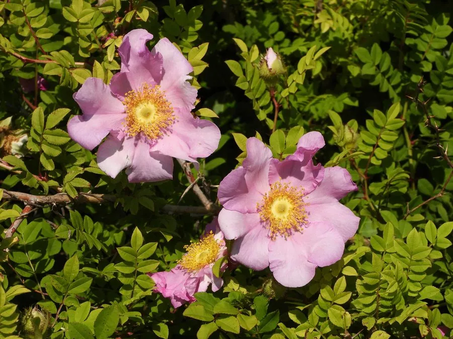

灌木与花木 · 植物界
缫丝花 Rosa roxburghii

蔷薇科落叶灌木，春季开淡粉色花，果实密生刺毛、富含维生素 C，可制刺梨汁，是西南山地的特色果树。
- 分类
- 门被子植物门纲木兰纲目蔷薇目科蔷薇科属蔷薇属
- 栖息环境
- 山坡灌丛、溪边与山地果园，喜光耐旱
- 地理分布
- 中国西南至华中，贵州、云南、四川、广西等地
- 保护级别
- 暂无评估；中国未列入国家重点保护野生植物名录
物种志
缫丝花为蔷薇科蔷薇属落叶灌木，高 1–2.5 米，树皮灰褐色，枝条具皮刺。叶互生，奇数羽状复叶，小叶 9–15 枚，椭圆形，边缘具细锯齿。花单生或 2–3 朵簇生，花瓣 5 枚，淡粉色至粉红色，花期 4–6 月；果实为蔷薇果，扁球形，密生刺毛，成熟时黄绿色，果期 8–9 月。
缫丝花原产中国西南至华中地区，生于山坡灌丛与溪边，贵州、云南等地栽培较多。它喜光，也耐半阴，耐寒、耐旱，适宜疏松肥沃、排水良好的土壤。果实俗称刺梨，富含维生素 C、黄酮和超氧化物歧化酶，可鲜食、榨汁、酿酒，是西南山地的特色果树；花淡粉色，也可作观赏灌木。栽培以扦插和分株繁殖为主，果实采收时需戴手套防刺。
形态与习性
- 株高1–2.5 米，枝条具皮刺
- 花期4–6 月，花淡粉色
- 果期8–9 月，果实密生刺毛
- 光照喜光，也耐半阴
- 水分耐旱，忌积水
- 土壤疏松肥沃、排水良好的土壤
- 主要用途刺梨果加工，庭院观花
趣味知识
- 缫丝花的果实就是刺梨，维生素 C 含量在水果中名列前茅。
- 果实表面密生刺毛，采收和加工时需戴手套。
- 刺梨汁、刺梨干是贵州等地的特色产品。
- 花淡粉色，春季开放，也可作观赏灌木栽培。